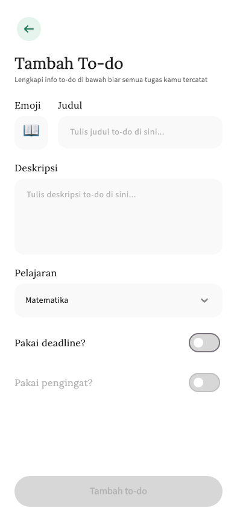
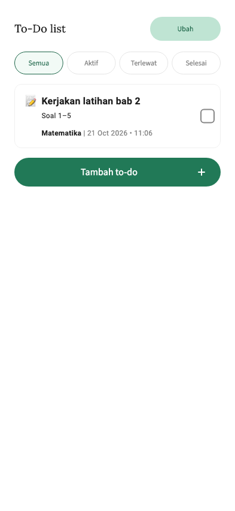

Rancana · Android · Panduan praktis
Cara bikin dan mengelola to-do list di Rancana
Catat tugas, lengkapi detailnya, lalu pantau sampai selesai. Kelompokkan tugas berdasarkan pelajaran supaya lebih mudah ditemukan.

Tambahkan pelajaran dulu
Buka Rancana di Android. Di bagian Pelajaran, pilih Tambah pelajaran. Isi Judul dan Deskripsi, lalu konfirmasi. Misalnya, tambahkan “Matematika” untuk mengelompokkan jadwal, to-do, dan flashcard matematika.
Tambah tugas pertama
- Buka pelajaran, pilih tab To-do, lalu Tambah To-do.
- Isi Judul dengan nama tugas yang jelas, misalnya “Kerjakan latihan bab 2”. Pada Deskripsi, tulis rinciannya, misalnya “Kerjakan soal 1–5”. Kedua kolom ini perlu diisi.
- Pilih Pelajaran. Emoji bisa kamu sesuaikan.
- Kalau tugas punya batas waktu, aktifkan “Pakai deadline?”, lalu pilih tanggal dan jamnya. Kamu juga bisa membuat tugas tanpa deadline.
- Kalau ingin diingatkan, aktifkan “Pakai pengingat?” dan pilih waktunya sebelum deadline. Pastikan notifikasi Rancana diizinkan di pengaturan Android agar pengingat bisa muncul.
- Tekan Tambah to-do, lalu konfirmasi.

Contoh tugas dengan detail yang jelas

Hari dan jam ini cuma contoh. Ikuti deadline dari guru atau dosenmu.
Kelola tugas setelah dibuat
Buka To-do, lalu gunakan filter Semua, Aktif, Terlewat, atau Selesai untuk melihat tugas yang kamu butuhkan. Setelah tugas dikerjakan, tandai sebagai selesai lewat tombol status. Untuk mengubah rinciannya, ketuk ikon ubah, perbarui isinya, lalu pilih Simpan perubahan. Saat kamu mengetuk ikon hapus, aplikasi akan meminta konfirmasi.
Kalau tombol tambah belum aktif
Pastikan Judul dan Deskripsi sudah diisi, lalu pilih Pelajaran. Kalau deadline aktif, pilih tanggal dan jam. Kalau pengingat aktif, pilih waktu pengingatnya. Paket Gratis memiliki batas 10 to-do aktif. Tandai tugas yang sudah kamu kerjakan sebagai selesai.
Lengkapi kebutuhan belajarmu
Lengkapi pelajaran yang sama dengan jadwal kelas dan flashcard.